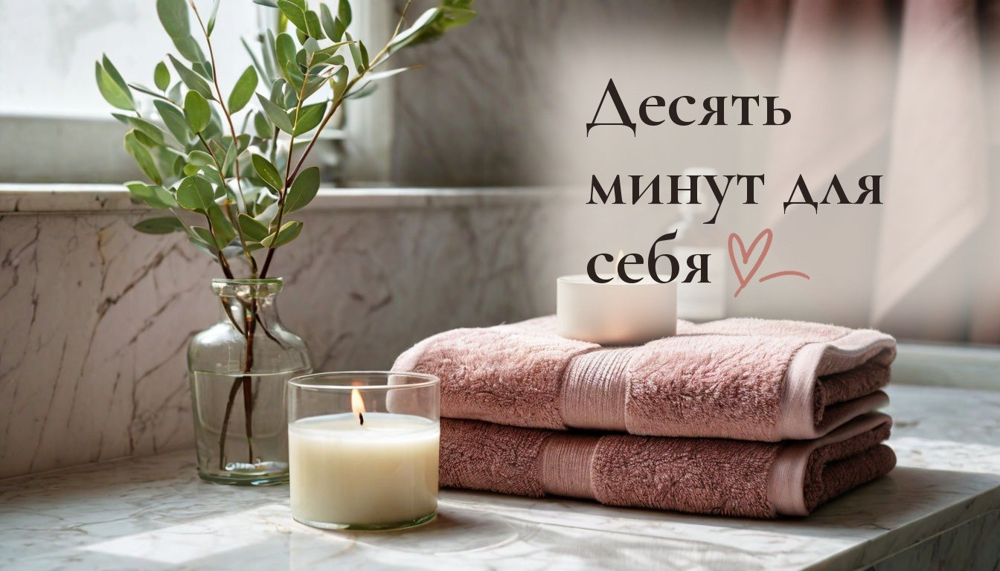
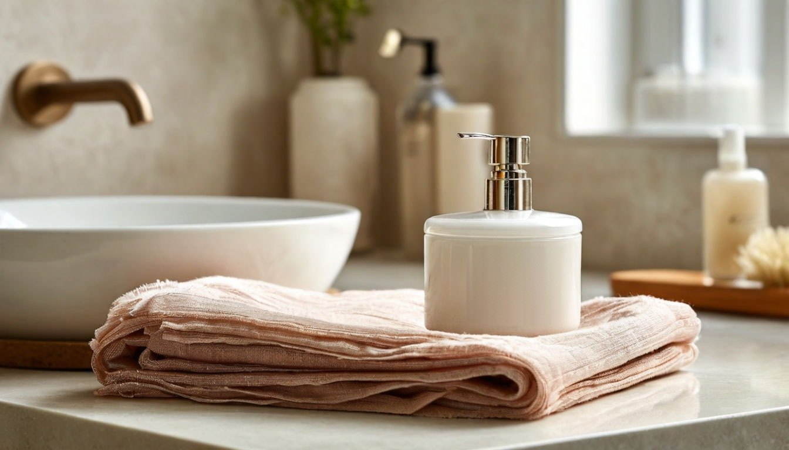

Как 10 минут спокойного вечернего ухода за лицом снимают усталость всего дня

Дети наконец уснули, на кухне домыта последняя чашка, а в квартире впервые за день тихо. Можно сразу упасть в кровать. А можно подойти к зеркалу и подарить себе десять минут.
Вечерний уход за лицом обычно описывают как список этапов: очищение, тоник, сыворотка, крем. Всё верно. Но мне кажется, что главное в нём не баночки, а то, что это единственные минуты за день, которые принадлежат только вам.
Это продолжение серии «Медленный быт». Раньше мы говорили о доме, а сегодня о том, как то же спокойствие перенести на уход за собой.

Сначала смыть день, а не только макияж
Умывание вечером снимает не только тональный крем и пыль. Это простой сигнал: день закончился, дальше можно не спешить.
Попробуйте умываться медленнее, чем обычно. Тёплая, а не горячая вода, мягкое средство, минута лёгких движений по лицу вместо трёх секунд на бегу. Горячая вода сушит кожу, а спешка не даёт заметить, как вы на самом деле устали.
Пауза между этапами тоже уход
Мы привыкли наносить всё подряд, лишь бы быстрее лечь. Но крем лучше ложится на чуть влажную кожу, а сыворотке нужна минута, чтобы впитаться.
Эти минуты можно не заполнять ничем. Просто постоять у открытого окна, выпить воды, выключить верхний свет и оставить только тёплую лампу. Кожа впитывает средство, а голова в это время перестаёт прокручивать дела на завтра.
Руки делают больше, чем кажется
Крем можно размазать за пять секунд. А можно нанести его лёгкими похлопываниями и мягко провести пальцами от центра лица к вискам, задержаться на висках, на линии челюсти, где за день копится напряжение.
Это не процедура из салона и не обещание чудес. Просто вечером лицу приятно бережное прикосновение, даже если это ваши собственные руки. Две минуты такого массажа помогают расслабиться перед сном лучше, чем ещё одна серия на телефоне.
Меньше средств, больше внимания
Медленный уход не требует десяти баночек. Наоборот, чем меньше шагов, тем легче не торопиться: умывание, одно увлажняющее средство и крем для губ.
Когда на полке стоит всё подряд, вечер легко превращается в обязанность. А три знакомые баночки не требуют решений и как раз оставляют место для тишины.
Руки и губы устали не меньше лица
За день руки моют посуду, режут, вытирают, держат телефон и детские ладошки. С началом отопления они сохнут первыми, а губы трескаются от сухого воздуха.
Раз уж вы стоите у зеркала, нанесите заодно крем на руки и бальзам на губы. Это ещё одна минута, и в ней тоже можно никуда не торопиться: втереть крем в каждый палец, как будто вам некуда спешить. Хотя бы сейчас это правда.
Что можно сделать уже сегодня
Выберите одну вещь из всего списка. Например, сегодня вечером выключите верхний свет в ванной и умойтесь при тёплой лампе, не торопясь, целую минуту.
Не нужно сразу менять всю рутину. Медленный быт начинается с одного движения, которое вы делаете чуть внимательнее, чем вчера.
От автора
У меня двое детей, кошка, которая носится по ночам, и бесконечный список дел. Поэтому мне так понятна цена этих десяти минут вечером: иногда только они и остаются от всего дня. Это не про красоту в первую очередь, а про то, чтобы вспомнить о себе до того, как день закончится.
И даже если вечером сил хватило только умыться, это тоже уход. Медленный быт не про идеальный ритуал, а про то, чтобы не проскакивать мимо себя.
Это пятая история из серии «Медленный быт». В воскресенье вечером продолжу: как один спокойный час готовит дом ко всей неделе. Подписывайтесь, чтобы не пропустить.
А какой у вас вечерний ритуал, после которого вы наконец чувствуете, что день закончился?